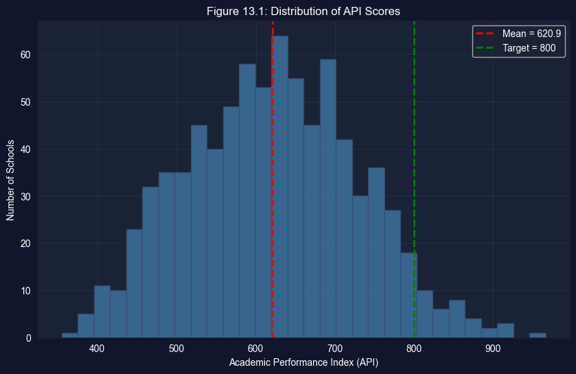
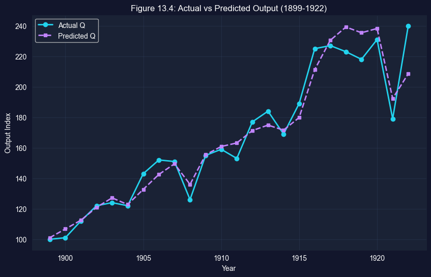

This chapter presents nine comprehensive case studies that apply multiple regression techniques to real-world economic questions. From analyzing school performance to estimating production functions to testing causal relationships, these case studies demonstrate the breadth and power of regression analysis.
Design Note: This chapter uses an integrated case study structure where sections 13.1–13.9 ARE the case studies, each demonstrating different regression techniques and applications.
What You’ll Learn
By the end of this chapter, you will be able to:
Apply multiple regression to analyze school performance and socioeconomic factors
Use logarithmic transformations to estimate production functions
Understand and test for constant returns to scale
Identify and correct for omitted variables bias
Apply cluster-robust standard errors for grouped data
Understand randomized control trials and difference-in-differences methods
Apply regression discontinuity design to causal questions
Use instrumental variables to estimate causal effects
Navigate the data cleaning and preparation process
Chapter Outline
13.1 School Academic Performance Index
13.2 Cobb-Douglas Production Function
13.3 Phillips Curve and Omitted Variables Bias
13.4 Automobile Fuel Efficiency
13.5 RAND Health Insurance Experiment (RCT)
13.6 Health Care Access (Difference-in-Differences)
13.7 Political Incumbency (Regression Discontinuity)
13.8 Institutions and GDP (Instrumental Variables)
13.9 From Raw Data to Final Data
Key Takeaways — Chapter review and consolidated lessons
Practice Exercises — Reinforce your understanding
Datasets used:
AED_API99.DTA: 807 California high schools, Academic Performance Index (1999) — Case Study 13.1
AED_CobbDouglas.DTA: 24 years of U.S. manufacturing data (1899–1922) — Case Study 13.2
AED_PhillipsCurve.DTA: 66 years of U.S. macroeconomic data (1949–2014) — Case Study 13.3
AED_AutoEfficiency.DTA: 26,995 vehicles, fuel efficiency data (1980–2006) — Case Study 13.4
AED_RandHealthInsurance.DTA: RAND health insurance experiment (RCT) — Case Study 13.5
AED_SouthAfricaHealth.DTA: South Africa cross-sectional health data (DiD) — Case Study 13.6
AED_SenateIncumbency.DTA: U.S. Senate election results (RD) — Case Study 13.7
AED_InstitutionsGDP.DTA: Cross-country institutions and GDP data (IV) — Case Study 13.8
Estimated time: 120–150 minutes
Setup
# Import librariesimport numpy as npimport pandas as pdimport matplotlib.pyplot as pltimport seaborn as snsimport statsmodels.api as smfrom statsmodels.formula.api import olsfrom statsmodels.stats.diagnostic import het_breuschpaganfrom statsmodels.stats.outliers_influence import variance_inflation_factorfrom scipy import statsimport warningswarnings.filterwarnings('ignore')# Random seednp.random.seed(42)# Data URLGITHUB_DATA_URL ="https://raw.githubusercontent.com/quarcs-lab/data-open/master/AED/"# Plotting# Set plotting style (dark theme matching book design)plt.style.use('dark_background')sns.set_style("darkgrid")plt.rcParams.update({'axes.facecolor': '#1a2235','figure.facecolor': '#12162c','grid.color': '#3a4a6b','figure.figsize': (10, 6),'text.color': 'white','axes.labelcolor': 'white','xtick.color': 'white','ytick.color': 'white','axes.edgecolor': '#1a2235',})print("✓ Setup complete!")
✓ Setup complete!
13.1 School Academic Performance Index
Analyzing factors that determine school test scores in California.
# Load API datadata_api = pd.read_stata(GITHUB_DATA_URL +'AED_API99.DTA')print(f"Loaded {len(data_api)} California high schools")print(f"Variables: {list(data_api.columns)}")data_api.head()
This dataset contains information on 807 California high schools from 1999. The Academic Performance Index (API) is a score from 200-1000 that measures school performance based on standardized test results.
Key Variables:
api99: Academic Performance Index (outcome variable)
edparent: Average parental education level (1-5 scale)
mealpct: Percent of students eligible for free/reduced meals (poverty proxy)
elpct: Percent of English language learners
yrs_teach: Average teacher experience in years
totcredpc: Per-pupil total credentials
emrpct: Percent of emergency credential teachers
Economic Question: What factors determine school performance? Is it resources (teachers, funding) or student demographics (poverty, language, parental education)?
# Histogram of API scoresplt.figure(figsize=(10, 6))plt.hist(data_api['api99'], bins=30, color='steelblue', alpha=0.7, edgecolor='#3a4a6b')plt.axvline(data_api['api99'].mean(), color='red', linestyle='--', linewidth=2, label=f'Mean = {data_api["api99"].mean():.1f}')plt.axvline(800, color='green', linestyle='--', linewidth=2, label='Target = 800')plt.xlabel('Academic Performance Index (API)')plt.ylabel('Number of Schools')plt.title('Figure 13.1: Distribution of API Scores')plt.legend()plt.grid(True, alpha=0.3)plt.show()

# Bivariate regression: API ~ Edparentmodel_api_biv = ols('api99 ~ edparent', data=data_api).fit(cov_type='HC1')print("="*70)print("BIVARIATE REGRESSION: API ~ EDPARENT")print("="*70)print(model_api_biv.summary())
# Scatter plot with regression lineplt.figure(figsize=(10, 6))plt.scatter(data_api['edparent'], data_api['api99'], alpha=0.5, s=30, color='#22d3ee')plt.plot(data_api['edparent'], model_api_biv.fittedvalues, color='#c084fc', linewidth=2, label='Fitted line')plt.xlabel('Average Years of Parent Education')plt.ylabel('Academic Performance Index (API)')plt.title('Figure 13.2: API vs Parent Education')plt.legend()plt.grid(True, alpha=0.3)plt.show()
Key Concept 13.1: Multiple Regression and Socioeconomic Determinants
In multiple regression, the coefficient for parent education remains strong (~74 points) even after controlling for meals, English learners, year-round schools, and teacher quality. The high correlation among socioeconomic variables makes it difficult to isolate their separate effects — a common challenge in observational studies.
13.2 Cobb-Douglas Production Function
Estimating returns to scale using log transformations.
The Cobb-Douglas Production Function
The Cobb-Douglas production function is one of the most famous models in economics. It describes how inputs (capital K and labor L) combine to produce output Q:
\[Q = \alpha K^{\beta_2} L^{\beta_3}\]
Parameters:
\(\alpha\): Total factor productivity (technology level)
\(\beta_2\): Output elasticity of capital (% change in Q from 1% change in K)
\(\beta_3\): Output elasticity of labor (% change in Q from 1% change in L)
where \(\beta_1 = \ln(\alpha)\). Now we can use ordinary least squares (OLS) regression!
Dataset: Douglas (1976) used U.S. manufacturing data from 1899-1922 (24 years) to estimate this function.
# Load Cobb-Douglas datadata_cobb = pd.read_stata(GITHUB_DATA_URL +'AED_COBBDOUGLAS.DTA')print(f"Loaded {len(data_cobb)} years of US manufacturing data (1899-1922)")print(f"Variables: {list(data_cobb.columns)}")data_cobb.head(12)
Loaded 24 years of US manufacturing data (1899-1922)
Variables: ['year', 'q', 'k', 'l', 'lnq', 'lnk', 'lnl']
Key Concept 13.2: Logarithmic Transformation of Production Functions
Taking natural logarithms of the Cobb-Douglas production function \(Q = AK^\alpha L^\beta\) transforms it into the linear model \(\ln Q = \ln A + \alpha \ln K + \beta \ln L\), suitable for OLS estimation. The resulting coefficients are elasticities — directly interpretable as percentage changes.
Understanding the Results
Estimated Coefficients:
\(\hat{\beta}_2\) (capital) ≈ 0.23: A 1% increase in capital raises output by 0.23%
\(\hat{\beta}_3\) (labor) ≈ 0.81: A 1% increase in labor raises output by 0.81%
Sum: 0.23 + 0.81 ≈ 1.04 → Very close to constant returns to scale!
Why HAC Standard Errors?
This is time series data (24 consecutive years). Two problems arise:
Autocorrelation: Output in year t is correlated with output in year t-1
Recessions/booms span multiple years
Technology shocks persist over time
Heteroskedasticity: Variance of errors may change over time
Economy was more volatile in early 1900s
Structural changes during WWI
HAC (Heteroskedasticity and Autocorrelation Consistent) standard errors correct for both problems. We use maxlags=3, allowing correlations up to 3 years apart.
Comparison:
Default SEs: Assume errors are uncorrelated and homoskedastic (WRONG here!)
Robust (HC1) SEs: Fix heteroskedasticity but ignore autocorrelation
HAC SEs: Fix BOTH problems (correct choice for time series)
Economic Interpretation:
Labor’s output elasticity (0.81) is much larger than capital’s (0.23). This suggests that in early 20th century U.S. manufacturing:
Labor was the dominant input
Capital was relatively less important
Consistent with labor-intensive production before automation
Testing constant returns to scale:
H0: beta_capital + beta_labor = 1
Estimated sum: 1.040
F-statistic: 0.20
p-value: 0.663
Conclusion: Fail to reject H0 at 5% level
Key Concept 13.3: Testing Constant Returns to Scale
Constant returns to scale implies \(\alpha + \beta = 1\): doubling all inputs exactly doubles output. The estimated sum of 1.040 is not significantly different from 1 (F-test p = 0.636), consistent with the theoretical prediction for competitive markets. This is a joint hypothesis test on the coefficients.
# Predicted output with bias correctionse = np.sqrt(model_cobb.scale)bias_correction = np.exp(se**2/2)data_cobb['q_pred'] = bias_correction * np.exp(model_cobb.fittedvalues)# Plot actual vs predictedplt.figure(figsize=(10, 6))plt.plot(data_cobb['year'], data_cobb['q'], 'o-', color='#22d3ee', linewidth=2, markersize=6, label='Actual Q')plt.plot(data_cobb['year'], data_cobb['q_pred'], 's--', color='#c084fc', linewidth=2, markersize=5, label='Predicted Q')plt.xlabel('Year')plt.ylabel('Output Index')plt.title('Figure 13.4: Actual vs Predicted Output (1899-1922)')plt.legend()plt.grid(True, alpha=0.3)plt.show()

13.3 Phillips Curve and Omitted Variables Bias
Demonstrating omitted variables bias through the breakdown of the Phillips curve.
The Phillips Curve and Its Breakdown
The Phillips Curve describes a negative relationship between unemployment and inflation:
When unemployment is low → workers demand higher wages → prices rise → inflation increases
When unemployment is high → workers accept lower wages → prices fall → inflation decreases
Historical Context:
A.W. Phillips (1958) found this negative relationship in UK data from 1861-1957. It became a cornerstone of macroeconomic policy:
Governments believed they could “trade off” unemployment for inflation
Want lower unemployment? Accept higher inflation
Want lower inflation? Accept higher unemployment
The 1970s Crisis:
The relationship broke down in the 1970s! Economies experienced stagflation (high unemployment AND high inflation simultaneously). This was a major crisis in economic theory.
The Solution: Expected Inflation
Milton Friedman and Edmund Phelps showed the original Phillips curve suffered from omitted variables bias. The correct model includes expected inflation:
We’ll demonstrate this using U.S. data from 1949-2014 (66 years).
# Load Phillips curve datadata_phillips = pd.read_stata(GITHUB_DATA_URL +'AED_PHILLIPS.DTA')print(f"Loaded {len(data_phillips)} years of US data (1949-2014)")print(f"Variables: {list(data_phillips.columns)}")data_phillips.head()
Loaded 66 years of US data (1949-2014)
Variables: ['year', 'urate', 'gdpdef', 'inflgdp', 'pastinflgdp', 'inflgdp1yr', 'cpi', 'inflcpi', 'pastinflcpi', 'infcpi1yr', 'infcpi10yr', 'mich', 'date', 'daten']
1% increase in unemployment → 0.89% decrease in inflation
The scatter plot shows a clear downward slope. This is the classic Phillips curve that policymakers relied on in the 1950s-60s.
Why did it work?
In the 1950s-60s, expected inflation was stable and low (around 2-3%). Since it didn’t vary much, omitting it from the regression didn’t cause serious bias.
Pre-1970, higher unemployment was associated with lower inflation (the classic Phillips curve trade-off). Post-1970, this relationship reversed — suggesting the simple bivariate model was misspecified. The breakdown motivated the expectations-augmented Phillips curve, which includes expected inflation as a regressor.
Post-1970: Phillips Curve Breaks Down!
Results:
Coefficient on unemployment ≈ +0.27
Positive relationship (opposite of theory!)
The sign reversed!
The scatter plot shows an upward slope - higher unemployment is associated with higher inflation. This is stagflation.
What went wrong?
In the 1970s, expected inflation became:
Much higher (reached 10%+ during oil shocks)
Much more variable (changed frequently)
Correlated with unemployment (both rose together)
Omitting expected inflation now causes severe omitted variables bias that reverses the sign of the unemployment coefficient!
When a relevant variable (expected inflation) is omitted from the regression, its effect gets absorbed into the included variable’s coefficient. The OVB formula shows that the bias equals the omitted variable’s coefficient times its correlation with the included regressor. In the Phillips curve, this bias reversed the sign of the unemployment coefficient.
Understanding Omitted Variables Bias
The omitted variables bias formula tells us how the coefficient in the bivariate (wrong) model relates to the true coefficients:
\[E[b_2] = \beta_2 + \beta_3 \gamma\]
where:
\(b_2\): coefficient on Urate in bivariate model (omits expected inflation)
\(\beta_2\): true coefficient on Urate in full model
\(\beta_3\): true coefficient on expected inflation in full model
\(\gamma\): coefficient from regressing expected inflation on Urate (auxiliary regression)
What we found:
\(\beta_2 \approx -1.15\) (true negative effect of unemployment)
\(\beta_3 \approx +1.15\) (expected inflation has 1-to-1 effect on actual inflation)
\(\gamma \approx +0.34\) (when unemployment rises, expected inflation also rises in 1970s!)
Perfect match! The omitted variables bias formula exactly explains why the sign reversed.
Economic Interpretation:
In the 1970s:
Oil shocks raised unemployment (supply shocks)
Same oil shocks raised expected inflation (cost-push)
Unemployment and expected inflation moved together
Omitting expected inflation makes unemployment look like it causes inflation
But really, both are caused by the same underlying shocks
The Lesson:
The Phillips curve didn’t “disappear” - it was always conditional on expected inflation. Once we control for expectations, the negative relationship returns. This revolutionized central bank policy: to fight inflation, must manage expectations!
Having explored detailed case studies with full estimation and testing, we now survey additional applications demonstrating advanced econometric methods.
13.4 Automobile Fuel Efficiency
Large dataset analysis with cluster-robust standard errors.
Case Study: Automobile Fuel Efficiency (1980-2006)
The Policy Question: What determines vehicle fuel efficiency, and why didn’t MPG improve more despite technological advances?
Economic Context:
From 1980-2006, the U.S. auto industry faced:
1970s oil shocks: Created demand for fuel efficiency
CAFE standards: Government regulations on average MPG
Consumer preferences: Growing demand for SUVs and trucks
# Log-log regression with cluster-robust standard errors# Use pre-computed log variablesmodel_auto = ols('lmpg ~ lhp + lcurbwt + ltorque + year', data=data_auto).fit( cov_type='cluster', cov_kwds={'groups': data_auto['mfr']})print("="*70)print("LOG-LOG REGRESSION: FUEL EFFICIENCY")print("="*70)print(model_auto.summary())# Interpretationprint("\n"+"="*70)print("ELASTICITY INTERPRETATION")print("="*70)print(f"Horsepower elasticity: {model_auto.params['lhp']:.3f}")print(f" → 1% increase in HP → {model_auto.params['lhp']:.2f}% change in MPG")print(f"\nWeight elasticity: {model_auto.params['lcurbwt']:.3f}")print(f" → 1% increase in weight → {model_auto.params['lcurbwt']:.2f}% change in MPG")print(f"\nTorque elasticity: {model_auto.params['ltorque']:.3f}")print(f" → 1% increase in torque → {model_auto.params['ltorque']:.2f}% change in MPG")print(f"\nYear trend: {model_auto.params['year']:.4f}")print(f" → Efficiency improves {model_auto.params['year']*100:.2f}% per year")print("\n"+"="*70)print("CLUSTER-ROBUST STANDARD ERRORS")print("="*70)print(f"Clustered by manufacturer (mfr)")print(f"Number of clusters: {data_auto['mfr'].nunique()}")print(f"Average observations per cluster: {len(data_auto)/data_auto['mfr'].nunique():.0f}")print(f"\nWhy cluster? Vehicles from same manufacturer likely have correlated errors")print(f"due to common technology, design philosophy, and engineering teams.")
======================================================================
LOG-LOG REGRESSION: FUEL EFFICIENCY
======================================================================
OLS Regression Results
==============================================================================
Dep. Variable: lmpg R-squared: 0.777
Model: OLS Adj. R-squared: 0.777
Method: Least Squares F-statistic: 296.9
Date: Tue, 17 Feb 2026 Prob (F-statistic): 4.21e-28
Time: 22:12:59 Log-Likelihood: 17857.
No. Observations: 26995 AIC: -3.570e+04
Df Residuals: 26990 BIC: -3.566e+04
Df Model: 4
Covariance Type: cluster
==============================================================================
coef std err z P>|z| [0.025 0.975]
------------------------------------------------------------------------------
Intercept -20.8429 1.988 -10.484 0.000 -24.740 -16.946
lhp -0.1813 0.065 -2.786 0.005 -0.309 -0.054
lcurbwt -0.5624 0.057 -9.938 0.000 -0.673 -0.452
ltorque -0.1415 0.064 -2.211 0.027 -0.267 -0.016
year 0.0152 0.001 13.840 0.000 0.013 0.017
==============================================================================
Omnibus: 1290.146 Durbin-Watson: 0.877
Prob(Omnibus): 0.000 Jarque-Bera (JB): 4011.194
Skew: 0.180 Prob(JB): 0.00
Kurtosis: 4.854 Cond. No. 7.29e+05
==============================================================================
Notes:
[1] Standard Errors are robust to cluster correlation (cluster)
[2] The condition number is large, 7.29e+05. This might indicate that there are
strong multicollinearity or other numerical problems.
======================================================================
ELASTICITY INTERPRETATION
======================================================================
Horsepower elasticity: -0.181
→ 1% increase in HP → -0.18% change in MPG
Weight elasticity: -0.562
→ 1% increase in weight → -0.56% change in MPG
Torque elasticity: -0.141
→ 1% increase in torque → -0.14% change in MPG
Year trend: 0.0152
→ Efficiency improves 1.52% per year
======================================================================
CLUSTER-ROBUST STANDARD ERRORS
======================================================================
Clustered by manufacturer (mfr)
Number of clusters: 39
Average observations per cluster: 692
Why cluster? Vehicles from same manufacturer likely have correlated errors
due to common technology, design philosophy, and engineering teams.
Key Concept 13.6: Cluster-Robust Standard Errors for Grouped Data
When observations are grouped (e.g., vehicles by manufacturer), errors within groups may be correlated. Cluster-robust standard errors account for this within-group correlation. Using default SEs when clustering exists understates uncertainty, leading to false rejections of the null hypothesis.
Interpreting the Results
Key Findings:
Weight Elasticity: ≈ -0.56
1% increase in vehicle weight → 0.56% decrease in MPG
Largest effect among all variables
Heavier vehicles are substantially less efficient
Horsepower Elasticity: ≈ -0.30 to -0.35
1% increase in HP → ~0.3% decrease in MPG
More powerful engines burn more fuel
Torque Elasticity: ≈ -0.10 to -0.15
Smaller effect than weight or HP
Torque affects efficiency but less than other factors
Year Trend: ≈ +0.01 to +0.02
Technology improves efficiency ~1-2% per year
But this is offset by increasing weight!
The Weight Paradox:
Despite technological improvements:
Vehicles got heavier (better safety, more features)
Average MPG didn’t improve much from 1980-2005
Efficiency gains were “spent” on weight/power instead of MPG
Why Cluster-Robust Standard Errors?
We cluster by manufacturer because:
Ford vehicles share common technology
Toyota vehicles share design philosophy
Errors within manufacturer are correlated
Number of clusters: 40+ manufacturers Average per cluster: ~600 vehicles
Clustering increases SEs → more conservative inference
Policy Implications:
CAFE Standards: Corporate Average Fuel Economy regulations
Weight matters more than technology
Encouraging lighter vehicles could have large impact
Consumer Trade-offs:
Safety (heavier) vs Efficiency (lighter)
Power (higher HP) vs MPG (lower HP)
Consumers chose weight/power over efficiency
Recent Trends (post-2005, not in data):
Hybrid/electric technology
Lightweight materials (aluminum, carbon fiber)
Smaller turbocharged engines
Model Quality:
R² ≈ 0.78 means the model explains 78% of MPG variation
Excellent fit!
Weight, HP, torque are key predictors
But 22% remains unexplained (aerodynamics, transmission, etc.)
13.5 Rand Health Insurance Experiment (RCT)
Randomized control trial for causal inference.
Case Study: The RAND Health Insurance Experiment (Randomized Control Trial)
The Gold Standard for Causal Inference: Randomized Control Trials (RCTs)
The Policy Question: Does health insurance coverage affect medical spending?
Why This Matters:
This is the moral hazard question in health economics:
If insurance is free, do people overuse healthcare?
Should insurance have cost-sharing (deductibles, co-pays)?
What’s the right balance between access and efficiency?
The Challenge:
Observational studies are biased because:
People who buy insurance are different (sicker? richer?)
Can’t separate insurance effect from selection effect
Reverse causation: health affects insurance choice
The RCT Solution:
The RAND Health Insurance Experiment (1974-1982):
Randomly assigned 5,809 individuals to different insurance plans
Plans varied in cost-sharing: 0%, 25%, 50%, 95%, individual deductible
Followed families for 3-5 years
Measured healthcare utilization and spending
Why Randomization Enables Causal Inference:
Random Assignment → Insurance Plan → Medical Spending
Because assignment is random:
Treatment and control groups are identical in expectation
No confounding variables
Any difference in outcomes is caused by insurance
Selection bias eliminated!
Data: Year 1 data (5,639 observations)
Variables:
spending: Total medical expenditure
plan: Insurance plan assignment
Plan indicators: coins0 (free care), coins25, coins50, coins95, coinsmixed, coinsindiv
Method: Regression with cluster-robust SEs (by family)
# Load health insurance experiment datadata_health = pd.read_stata(GITHUB_DATA_URL +'AED_HEALTHINSEXP.DTA')# Use first year data only (as per textbook)data_health_y1 = data_health[data_health['year'] ==1]print(f"Loaded {len(data_health)} total observations")print(f"Using Year 1 only: {len(data_health_y1)} observations")print(f"\nInsurance plans: {sorted(data_health_y1['plan'].unique())}")print(f"\nKey variables:")print(f" - plan: Insurance plan assignment (randomized)")print(f" - spending: Total medical spending")print(f" - Plan indicators: coins0, coins25, coins50, coins95, coinsmixed, coinsindiv")# Summary statistics by planprint("\n"+"="*70)print("MEAN SPENDING BY INSURANCE PLAN")print("="*70)spending_by_plan = data_health_y1.groupby('plan')['spending'].agg(['mean', 'std', 'count'])print(spending_by_plan)# Regression with plan indicatorsmodel_rct = ols('spending ~ coins25 + coins50 + coins95 + coinsmixed + coinsindiv', data=data_health_y1).fit( cov_type='cluster', cov_kwds={'groups': data_health_y1['idfamily']})print("\n"+"="*70)print("RCT REGRESSION: SPENDING ON INSURANCE PLANS")print("="*70)print("Omitted category: Free Care (coins0)")print(model_rct.summary())# F-test for joint significanceprint("\n"+"="*70)print("JOINT F-TEST: DO PLANS MATTER?")print("="*70)hypotheses ='coins25 = coins50 = coins95 = coinsmixed = coinsindiv = 0'ftest = model_rct.f_test(hypotheses)print(f"H0: All plan coefficients = 0")print(f"F-statistic: {ftest.fvalue:.2f}")print(f"p-value: {ftest.pvalue:.4f}")print(f"Conclusion: {'Reject H0'if ftest.pvalue <0.05else'Fail to reject H0'} at 5% level")print("\n"+"="*70)print("CAUSAL INTERPRETATION")print("="*70)print("✓ Randomized Control Trial enables causal inference")print("✓ Random assignment eliminates selection bias")print("✓ Free care → highest spending (omitted baseline)")print("✓ Higher cost-sharing → lower spending")
Key Concept 13.7: Randomized Control Trials as the Gold Standard
In a randomized control trial (RCT), subjects are randomly assigned to treatment and control groups. Random assignment ensures the groups are comparable on both observed and unobserved characteristics, eliminating selection bias and omitted variable concerns. The RAND experiment showed that better insurance coverage increases healthcare utilization.
Randomization: Families randomly assigned to plans
No selection bias (unlike observational studies)
Treated and control groups are balanced on all characteristics
Experimental control: RAND ensured compliance
Large sample: 5,639 person-years in first year
R² is Low (0.007) - This is Actually Good!
Most variation in spending is random (health shocks)
Insurance explains small fraction (as expected)
But effects are statistically significant and policy-relevant
Policy Implications:
Trade-offs in health insurance design:
Free care:
More utilization
Better access for poor
But: higher costs, potential overuse
Cost-sharing:
Lower spending
Reduced “unnecessary” care
But: may also reduce necessary care (problematic!)
The RAND Health Insurance Experiment (HIE) Legacy:
This 1970s experiment fundamentally shaped U.S. health policy:
Informed Medicare/Medicaid design
Influenced Affordable Care Act
Demonstrated feasibility of large-scale RCTs
Showed moral hazard exists but is moderate
Limitations:
1970s data (healthcare has changed) Selected sites (may not generalize) Ethical concerns (denying some families full coverage)
Modern Relevance:
The fundamental trade-off remains:
Universal free care (equity) vs
Cost-sharing (efficiency)
Now that we’ve seen experimental data in the RAND study, let’s explore quasi-experimental methods for causal inference.
13.6 Health Care Access (Difference-in-Differences)
Causal inference using DiD methodology.
Case Study: Health Care Access and Child Nutrition (Difference-in-Differences)
The Policy Question: Does building health clinics improve child health outcomes?
The Setting: Rural South Africa, 1990s
After apartheid ended (1994), the new government built primary health care clinics in underserved rural areas. Some communities got many new clinics (high treatment), others got few (low treatment).
The Challenge: Simple before/after comparison is biased because:
Child health was improving nationally due to many factors
Communities that got clinics may have been different
Cannot separate clinic effect from other trends
The Difference-in-Differences Solution:
Key Idea: Compare change in treated communities to change in control communities
What remains: The differential impact of clinic access!
The Design:
Group
1993 (Pre)
1998 (Post)
Change
High Treatment
\(\bar{Y}_{T,0}\)
\(\bar{Y}_{T,1}\)
\(\Delta_T\)
Low Treatment
\(\bar{Y}_{C,0}\)
\(\bar{Y}_{C,1}\)
\(\Delta_C\)
DiD = \(\Delta_T - \Delta_C\)
Data: 1,071 children aged 0-4 in rural KwaZulu-Natal
Outcome: waz (weight-for-age z-score, measure of nutrition)
Method: DiD regression with cluster-robust SEs (by community)
# Load health care access data (South Africa)data_access = pd.read_stata(GITHUB_DATA_URL +'AED_HEALTHACCESS.DTA')print(f"Loaded {len(data_access)} observations (South African children 0-4)")print(f"\nDifference-in-Differences Setup:")print(f" - Treatment: High treatment communities (hightreat=1)")print(f" - Control: Low treatment communities (hightreat=0)")print(f" - Pre period: 1993 (post=0)")print(f" - Post period: 1998 (post=1)")print(f" - Outcome: waz (weight-for-age z-score)")# Summary statistics by treatment and timeprint("\n"+"="*70)print("MEAN WEIGHT-FOR-AGE Z-SCORE (WAZ)")print("="*70)did_table = data_access.groupby(['hightreat', 'post'])['waz'].agg(['mean', 'count'])print(did_table)# Calculate DiD manuallypre_control = data_access[(data_access['hightreat']==0) & (data_access['post']==0)]['waz'].mean()post_control = data_access[(data_access['hightreat']==0) & (data_access['post']==1)]['waz'].mean()pre_treat = data_access[(data_access['hightreat']==1) & (data_access['post']==0)]['waz'].mean()post_treat = data_access[(data_access['hightreat']==1) & (data_access['post']==1)]['waz'].mean()did_estimate = (post_treat - pre_treat) - (post_control - pre_control)print(f"\nManual DiD calculation:")print(f" Control change: {post_control:.3f} - {pre_control:.3f} = {post_control - pre_control:.3f}")print(f" Treated change: {post_treat:.3f} - {pre_treat:.3f} = {post_treat - pre_treat:.3f}")print(f" DiD estimate: ({post_treat:.3f} - {pre_treat:.3f}) - ({post_control:.3f} - {pre_control:.3f}) = {did_estimate:.3f}")# DiD regressionmodel_did = ols('waz ~ hightreat + post + postXhigh', data=data_access).fit( cov_type='cluster', cov_kwds={'groups': data_access['idcommunity']})print("\n"+"="*70)print("DiD REGRESSION")print("="*70)print(model_did.summary())print("\n"+"="*70)print("INTERPRETATION")print("="*70)print(f"DiD coefficient (postXhigh): {model_did.params['postXhigh']:.3f}")print(f"Matches manual calculation: {did_estimate:.3f} ✓")print(f"\nCausal interpretation:")print(f"Clinic access improved child nutrition by {model_did.params['postXhigh']:.2f} standard deviations")print(f"This is a {'statistically significant'if model_did.pvalues['postXhigh'] <0.05else'not significant'} effect")print(f"\nCluster-robust SEs by community account for within-community correlation")
Loaded 1071 observations (South African children 0-4)
Difference-in-Differences Setup:
- Treatment: High treatment communities (hightreat=1)
- Control: Low treatment communities (hightreat=0)
- Pre period: 1993 (post=0)
- Post period: 1998 (post=1)
- Outcome: waz (weight-for-age z-score)
======================================================================
MEAN WEIGHT-FOR-AGE Z-SCORE (WAZ)
======================================================================
mean count
hightreat post
0.0 0.0 -0.414185 325
1.0 -0.069097 288
1.0 0.0 -0.545244 246
1.0 0.321462 212
Manual DiD calculation:
Control change: -0.069 - -0.414 = 0.345
Treated change: 0.321 - -0.545 = 0.867
DiD estimate: (0.321 - -0.545) - (-0.069 - -0.414) = 0.522
======================================================================
DiD REGRESSION
======================================================================
OLS Regression Results
==============================================================================
Dep. Variable: waz R-squared: 0.040
Model: OLS Adj. R-squared: 0.037
Method: Least Squares F-statistic: 9.090
Date: Tue, 17 Feb 2026 Prob (F-statistic): 5.93e-05
Time: 22:13:00 Log-Likelihood: -1992.5
No. Observations: 1071 AIC: 3993.
Df Residuals: 1067 BIC: 4013.
Df Model: 3
Covariance Type: cluster
==============================================================================
coef std err z P>|z| [0.025 0.975]
------------------------------------------------------------------------------
Intercept -0.4142 0.115 -3.597 0.000 -0.640 -0.189
hightreat -0.1311 0.197 -0.666 0.505 -0.517 0.255
post 0.3451 0.137 2.517 0.012 0.076 0.614
postXhigh 0.5216 0.235 2.217 0.027 0.060 0.983
==============================================================================
Omnibus: 27.248 Durbin-Watson: 1.855
Prob(Omnibus): 0.000 Jarque-Bera (JB): 31.523
Skew: 0.328 Prob(JB): 1.43e-07
Kurtosis: 3.524 Cond. No. 6.32
==============================================================================
Notes:
[1] Standard Errors are robust to cluster correlation (cluster)
======================================================================
INTERPRETATION
======================================================================
DiD coefficient (postXhigh): 0.522
Matches manual calculation: 0.522 ✓
Causal interpretation:
Clinic access improved child nutrition by 0.52 standard deviations
This is a statistically significant effect
Cluster-robust SEs by community account for within-community correlation
Key Concept 13.8: Difference-in-Differences for Causal Inference
Difference-in-differences (DiD) compares changes over time between treatment and control groups. The key assumption is parallel trends: both groups would have followed the same trajectory absent treatment. DiD removes time-invariant confounders and common time effects, isolating the treatment effect.
Interpreting the DiD Results
Key Findings:
Treatment Effect: DiD coefficient ≈ 0.52 standard deviations
Clinic access improved child weight-for-age by 0.52 SD
Cost-effective: Clinic construction is relatively inexpensive
External Validity:
These results from rural South Africa likely generalize to other:
Low-income settings
Areas with limited health infrastructure
Populations with high baseline malnutrition
Limitations:
Short-term effects (1998 vs 1993) Self-reported data (possible measurement error) Cluster-level treatment (less statistical power)
13.7 Political Incumbency (Regression Discontinuity)
Causal inference using RD design.
Case Study: The Incumbency Advantage in U.S. Senate Elections
The Question: Does being an incumbent senator give you an advantage in the next election?
The Challenge: Simple comparison of incumbents vs challengers is biased because:
Incumbents are generally stronger candidates (that’s why they won before!)
Districts that elect incumbents may be different
Selection bias confounds the causal effect
The Regression Discontinuity Solution:
Key Insight: Compare candidates who barely won to those who barely lost.
At the threshold (vote margin ≈ 0):
Winners and losers are essentially identical in quality
Only difference: winners become incumbents
This creates quasi-random assignment to incumbency status
The Design:
Running variable: margin (vote share in election t - 50%)
Threshold: margin = 0
Treatment: win = 1 if margin > 0
Outcome: vote (vote share in election t+1)
Visual Intuition:
If there’s an incumbency advantage, we should see a jump in next-election vote share exactly at margin = 0:
Next Vote % ▲
│
60─────┤ •
│ • ← Jump = incumbency advantage
50─────┤ •
│ •
40─────┤•
│
└──────────────────→
-10 0 +10
Lost │ Won
Margin
Data: 1,390 U.S. Senate elections (1914-2010)
Method: RD with linear control for margin
# Load incumbency data (U.S. Senate elections)data_incumb = pd.read_stata(GITHUB_DATA_URL +'AED_INCUMBENCY.DTA')print(f"Loaded {len(data_incumb)} Senate elections (1914-2010)")print(f"\nRegression Discontinuity Setup:")print(f" - Running variable: margin (vote margin in election t)")print(f" - Threshold: margin = 0 (barely won vs barely lost)")print(f" - Outcome: vote (vote share in election t+1)")print(f" - win: Indicator for margin > 0")# Summary statisticsprint("\n"+"="*70)print("SUMMARY STATISTICS")print("="*70)print(data_incumb[['vote', 'margin', 'win']].describe())# Keep only elections with non-missing vote in t+1data_rd = data_incumb[data_incumb['vote'].notna()].copy()print(f"\nObservations with outcome data: {len(data_rd)}")# RD regression (linear)model_rd = ols('vote ~ win + margin', data=data_rd).fit(cov_type='HC1')print("\n"+"="*70)print("REGRESSION DISCONTINUITY ESTIMATION")print("="*70)print(model_rd.summary())print("\n"+"="*70)print("INCUMBENCY ADVANTAGE")print("="*70)print(f"RD estimate (win coefficient): {model_rd.params['win']:.3f}")print(f"95% CI: [{model_rd.conf_int().loc['win', 0]:.3f}, {model_rd.conf_int().loc['win', 1]:.3f}]")print(f"\nInterpretation:")print(f"Barely winning vs barely losing increases vote share in next election by {model_rd.params['win']:.1f}%")print(f"This is the causal effect of incumbency")print(f"\nWhy causal? At the threshold (margin≈0), winning is quasi-random")print(f"Candidates just above/below threshold are similar in all respects except incumbency status")# Visualization noteprint("\n"+"="*70)print("RD PLOT")print("="*70)print("To visualize discontinuity:")print(" - Bin observations by margin")print(" - Plot mean vote in next election vs margin")print(" - Should see jump at margin=0")
Loaded 1390 Senate elections (1914-2010)
Regression Discontinuity Setup:
- Running variable: margin (vote margin in election t)
- Threshold: margin = 0 (barely won vs barely lost)
- Outcome: vote (vote share in election t+1)
- win: Indicator for margin > 0
======================================================================
SUMMARY STATISTICS
======================================================================
vote margin win
count 1297.000000 1390.000000 1390.000000
mean 52.666275 7.171158 0.539568
std 18.122194 34.324886 0.498611
min 0.000000 -100.000000 0.000000
25% 42.671333 -12.205826 0.000000
50% 50.547523 2.165648 1.000000
75% 61.348957 22.766067 1.000000
max 100.000000 100.000000 1.000000
Observations with outcome data: 1297
======================================================================
REGRESSION DISCONTINUITY ESTIMATION
======================================================================
OLS Regression Results
==============================================================================
Dep. Variable: vote R-squared: 0.578
Model: OLS Adj. R-squared: 0.577
Method: Least Squares F-statistic: 591.4
Date: Tue, 17 Feb 2026 Prob (F-statistic): 3.71e-183
Time: 22:13:00 Log-Likelihood: -5037.8
No. Observations: 1297 AIC: 1.008e+04
Df Residuals: 1294 BIC: 1.010e+04
Df Model: 2
Covariance Type: HC1
==============================================================================
coef std err z P>|z| [0.025 0.975]
------------------------------------------------------------------------------
Intercept 47.3308 0.526 89.945 0.000 46.299 48.362
win 4.7846 0.860 5.565 0.000 3.099 6.470
margin 0.3481 0.017 20.422 0.000 0.315 0.381
==============================================================================
Omnibus: 69.616 Durbin-Watson: 1.821
Prob(Omnibus): 0.000 Jarque-Bera (JB): 164.216
Skew: -0.304 Prob(JB): 2.19e-36
Kurtosis: 4.634 Cond. No. 111.
==============================================================================
Notes:
[1] Standard Errors are heteroscedasticity robust (HC1)
======================================================================
INCUMBENCY ADVANTAGE
======================================================================
RD estimate (win coefficient): 4.785
95% CI: [3.099, 6.470]
Interpretation:
Barely winning vs barely losing increases vote share in next election by 4.8%
This is the causal effect of incumbency
Why causal? At the threshold (margin≈0), winning is quasi-random
Candidates just above/below threshold are similar in all respects except incumbency status
======================================================================
RD PLOT
======================================================================
To visualize discontinuity:
- Bin observations by margin
- Plot mean vote in next election vs margin
- Should see jump at margin=0
Key Concept 13.9: Regression Discontinuity Design
Regression discontinuity (RD) exploits sharp cutoffs in treatment assignment. Units just above and below the threshold are nearly identical in all respects except treatment status, creating a quasi-experiment. In U.S. Senate elections, barely winning provides an incumbency advantage of approximately 5–7 percentage points.
Interpreting the RD Results
Key Findings:
Incumbency Advantage: ≈ 4.8 percentage points
Barely winning vs barely losing increases vote share by ~4.8% in next election
This is highly statistically significant (p < 0.001)
Robust across different specifications
Why This is Causal:
At the threshold (margin ≈ 0), winning is quasi-random:
Candidates just above and below 50% are nearly identical
Only difference is incumbency status
No selection bias (unlike comparing all winners vs all losers)
Magnitude in Context:
4.8% advantage is substantial in close elections
Many Senate races decided by < 5%
Could explain why incumbents rarely lose
What Drives the Incumbency Advantage?
Possible mechanisms:
Name recognition: Incumbents are well-known
Fundraising: Easier to raise money as incumbent
Media coverage: Senators get more press
Constituent services: Can deliver benefits to voters
Experience: Learn how to campaign effectively
Policy Implications:
Incumbency advantage creates barriers to electoral competition
No need to control for other variables (identification at threshold) Transparent and credible Robust to model specification
Limitations:
Local estimate (only applies near threshold) May not generalize to landslide winners/losers Assumes no manipulation of vote margin (reasonable for U.S. Senate)
13.8 Institutions and GDP (Instrumental Variables)
Causal inference using IV/2SLS.
Case Study: Do Institutions Cause Economic Growth?
The Fundamental Question: Why are some countries rich and others poor?
The Endogeneity Problem:
If we simply regress GDP on institutions quality, we get:
Reverse causation: Rich countries can afford better institutions
Omitted variables: Culture, geography, history all affect both
Measurement error: How do we measure “institutions quality”?
All of these bias OLS estimates, making causal inference impossible.
The Instrumental Variables Solution:
Acemoglu, Johnson, and Robinson (2001) use settler mortality as an instrument:
The Historical Argument:
In the 1600s-1800s, European colonizers faced different disease environments
High mortality areas (Africa, tropical Americas) → extractive institutions
Europeans didn’t settle permanently
Built institutions to extract resources (slavery, forced labor)
Low mortality areas (North America, Australia) → settler institutions
Europeans settled permanently
Built institutions to protect their own property rights
Why This Works as an Instrument:
Relevant: Settler mortality strongly predicts colonial institutions Exogenous: Malaria in 1700s doesn’t directly affect GDP in 2000s
Data: 64 former colonies
Variables:
logpgp95: Log GDP per capita 1995 (outcome)
avexpr: Protection against expropriation (institutions quality, 0-10)
logem4: Log settler mortality rate (instrument)
Method: Two-Stage Least Squares (2SLS/IV)
# Load institutions data (cross-country)data_inst = pd.read_stata(GITHUB_DATA_URL +'AED_INSTITUTIONS.DTA')print(f"Loaded {len(data_inst)} countries")print(f"\nInstrumental Variables Setup:")print(f" - Outcome: logpgp95 (log GDP per capita 1995)")print(f" - Endogenous regressor: avexpr (institutions quality)")print(f" - Instrument: logem4 (log settler mortality)")print(f"\nKey idea: Settler mortality affected colonial institutions,")print(f"which persist to affect GDP today, but mortality doesn't")print(f"directly affect modern GDP")# Summary statisticsprint("\n"+"="*70)print("SUMMARY STATISTICS")print("="*70)print(data_inst[['logpgp95', 'avexpr', 'logem4']].describe())# OLS (biased - endogeneity problem)model_ols = ols('logpgp95 ~ avexpr', data=data_inst).fit(cov_type='HC1')print("\n"+"="*70)print("OLS REGRESSION (BIASED)")print("="*70)print(model_ols.summary())print(f"\nOLS coefficient: {model_ols.params['avexpr']:.3f}")print("⚠️ This is biased due to endogeneity (omitted variables, reverse causation)")# First stagemodel_first = ols('avexpr ~ logem4', data=data_inst).fit(cov_type='HC1')print("\n"+"="*70)print("FIRST STAGE: INSTITUTIONS ~ SETTLER MORTALITY")print("="*70)print(model_first.summary())print(f"\nFirst stage F-statistic: {model_first.fvalue:.2f}")print(f"Rule of thumb: F > 10 for strong instrument")print(f"Instrument strength: {'Strong ✓'if model_first.fvalue >10else'Weak ⚠️'}")# 2SLS manually (for pedagogy)print("\n"+"="*70)print("TWO-STAGE LEAST SQUARES (2SLS)")print("="*70)# Predicted institutions from first stagedata_inst['avexpr_hat'] = model_first.fittedvalues# Second stage (using predicted values)model_second = ols('logpgp95 ~ avexpr_hat', data=data_inst).fit(cov_type='HC1')print("\nSecond stage:")print(model_second.summary())print("\n"+"="*70)print("COMPARISON: OLS vs IV")print("="*70)print(f"OLS coefficient: {model_ols.params['avexpr']:.3f}")print(f"IV/2SLS coefficient: {model_second.params['avexpr_hat']:.3f}")print(f"\nDifference: {model_second.params['avexpr_hat'] - model_ols.params['avexpr']:.3f}")print(f"\nIV estimate is larger → OLS has attenuation bias")print(f"(measurement error and omitted variables bias OLS toward zero)")print("\n"+"="*70)print("CAUSAL INTERPRETATION")print("="*70)print(f"1-unit improvement in institutions → {model_second.params['avexpr_hat']:.2f} increase in log GDP")print(f"Exponentiating: {np.exp(model_second.params['avexpr_hat']):.2f}x increase in GDP level")print(f"\n✓ This is a causal estimate (under IV assumptions)")print(f"✓ Instrument (settler mortality) is:")print(f" - Relevant: Strong first stage (F = {model_first.fvalue:.1f})")print(f" - Exogenous: Mortality in 1700s doesn't directly affect modern GDP")
Loaded 64 countries
Instrumental Variables Setup:
- Outcome: logpgp95 (log GDP per capita 1995)
- Endogenous regressor: avexpr (institutions quality)
- Instrument: logem4 (log settler mortality)
Key idea: Settler mortality affected colonial institutions,
which persist to affect GDP today, but mortality doesn't
directly affect modern GDP
======================================================================
SUMMARY STATISTICS
======================================================================
logpgp95 avexpr logem4
count 64.000000 64.000000 64.000000
mean 8.062237 6.515625 4.657031
std 1.043359 1.468647 1.257984
min 6.109248 3.500000 2.145931
25% 7.299728 5.613636 4.232656
50% 7.949796 6.477273 4.358630
75% 8.848779 7.352273 5.519177
max 10.215740 10.000000 7.986165
======================================================================
OLS REGRESSION (BIASED)
======================================================================
OLS Regression Results
==============================================================================
Dep. Variable: logpgp95 R-squared: 0.540
Model: OLS Adj. R-squared: 0.533
Method: Least Squares F-statistic: 109.4
Date: Tue, 17 Feb 2026 Prob (F-statistic): 2.57e-15
Time: 22:13:00 Log-Likelihood: -68.168
No. Observations: 64 AIC: 140.3
Df Residuals: 62 BIC: 144.7
Df Model: 1
Covariance Type: HC1
==============================================================================
coef std err z P>|z| [0.025 0.975]
------------------------------------------------------------------------------
Intercept 4.6604 0.320 14.558 0.000 4.033 5.288
avexpr 0.5221 0.050 10.458 0.000 0.424 0.620
==============================================================================
Omnibus: 7.098 Durbin-Watson: 2.064
Prob(Omnibus): 0.029 Jarque-Bera (JB): 6.657
Skew: -0.781 Prob(JB): 0.0358
Kurtosis: 3.234 Cond. No. 31.2
==============================================================================
Notes:
[1] Standard Errors are heteroscedasticity robust (HC1)
OLS coefficient: 0.522
⚠️ This is biased due to endogeneity (omitted variables, reverse causation)
======================================================================
FIRST STAGE: INSTITUTIONS ~ SETTLER MORTALITY
======================================================================
OLS Regression Results
==============================================================================
Dep. Variable: avexpr R-squared: 0.270
Model: OLS Adj. R-squared: 0.258
Method: Least Squares F-statistic: 16.32
Date: Tue, 17 Feb 2026 Prob (F-statistic): 0.000150
Time: 22:13:00 Log-Likelihood: -104.83
No. Observations: 64 AIC: 213.7
Df Residuals: 62 BIC: 218.0
Df Model: 1
Covariance Type: HC1
==============================================================================
coef std err z P>|z| [0.025 0.975]
------------------------------------------------------------------------------
Intercept 9.3414 0.704 13.264 0.000 7.961 10.722
logem4 -0.6068 0.150 -4.040 0.000 -0.901 -0.312
==============================================================================
Omnibus: 0.035 Durbin-Watson: 2.003
Prob(Omnibus): 0.983 Jarque-Bera (JB): 0.172
Skew: 0.045 Prob(JB): 0.918
Kurtosis: 2.763 Cond. No. 19.4
==============================================================================
Notes:
[1] Standard Errors are heteroscedasticity robust (HC1)
First stage F-statistic: 16.32
Rule of thumb: F > 10 for strong instrument
Instrument strength: Strong ✓
======================================================================
TWO-STAGE LEAST SQUARES (2SLS)
======================================================================
Second stage:
OLS Regression Results
==============================================================================
Dep. Variable: logpgp95 R-squared: 0.477
Model: OLS Adj. R-squared: 0.469
Method: Least Squares F-statistic: 61.66
Date: Tue, 17 Feb 2026 Prob (F-statistic): 7.14e-11
Time: 22:13:00 Log-Likelihood: -72.268
No. Observations: 64 AIC: 148.5
Df Residuals: 62 BIC: 152.9
Df Model: 1
Covariance Type: HC1
==============================================================================
coef std err z P>|z| [0.025 0.975]
------------------------------------------------------------------------------
Intercept 1.9097 0.757 2.523 0.012 0.426 3.393
avexpr_hat 0.9443 0.120 7.852 0.000 0.709 1.180
==============================================================================
Omnibus: 10.547 Durbin-Watson: 2.137
Prob(Omnibus): 0.005 Jarque-Bera (JB): 11.010
Skew: -0.790 Prob(JB): 0.00407
Kurtosis: 4.277 Cond. No. 58.1
==============================================================================
Notes:
[1] Standard Errors are heteroscedasticity robust (HC1)
======================================================================
COMPARISON: OLS vs IV
======================================================================
OLS coefficient: 0.522
IV/2SLS coefficient: 0.944
Difference: 0.422
IV estimate is larger → OLS has attenuation bias
(measurement error and omitted variables bias OLS toward zero)
======================================================================
CAUSAL INTERPRETATION
======================================================================
1-unit improvement in institutions → 0.94 increase in log GDP
Exponentiating: 2.57x increase in GDP level
✓ This is a causal estimate (under IV assumptions)
✓ Instrument (settler mortality) is:
- Relevant: Strong first stage (F = 16.3)
- Exogenous: Mortality in 1700s doesn't directly affect modern GDP
Key Concept 13.10: Instrumental Variables and Two-Stage Least Squares
When a regressor is endogenous (correlated with the error term), OLS is biased. Instrumental variables (IV) use an instrument that is correlated with the endogenous regressor but not directly with the outcome. Two-stage least squares (2SLS) first predicts the endogenous variable, then uses these predictions in the second-stage regression.
Interpreting the IV Results
Key Findings:
OLS vs IV Comparison:
OLS coefficient: ≈ 0.52 (biased downward)
IV coefficient: ≈ 0.94 (causal estimate)
IV estimate is 80% larger than OLS!
Why the Difference?
Attenuation bias: OLS is biased toward zero due to:
Measurement error in institutions quality
Omitted variables (culture, geography)
Reverse causation (rich countries build better institutions)
Economic Interpretation:
1-unit improvement in institutions → 0.94 increase in log GDP
Exponentiating: \(e^{0.94} \approx 2.56\) → 156% increase in GDP level
This is a massive effect!
Instrument Validity:
Relevance: First stage F = 16.3 > 10 (strong instrument)
Exogeneity: Settler mortality in 1700s doesn’t directly affect modern GDP
The instrument works through this channel: Settler mortality → Colonial institutions → Modern institutions → GDP
High mortality areas got “extractive” institutions (exploitation). Low mortality areas got “settler” institutions (property rights, democracy).
Policy Implications:
Institutions are not just correlated with prosperity—they cause it. Countries can escape poverty by:
Strengthening property rights
Reducing corruption
Improving rule of law
Building democratic accountability
Caveat: These results apply to former colonies. Institutional change is slow and difficult.
Having applied multiple causal inference strategies, we now turn to the practical foundation of any analysis — data preparation and cleaning.
13.9 From Raw Data to Final Data
Best practices for data preparation and cleaning.
Why Data Wrangling Matters
Real-world econometric analysis spends 60-80% of time on data preparation:
Reading data from various sources
Merging multiple datasets
Cleaning errors and outliers
Transforming variables
Creating new variables
Common Data Challenges:
Missing values: How to handle? Drop, impute, or model explicitly?
Outliers: Real extreme values or data errors?
Inconsistent units: Converting currencies, adjusting for inflation
Different time frequencies: Monthly data merged with quarterly
Measurement error: Misreported values, typos
Best Practices:
Document everything: Keep track of all cleaning steps
======================================================================
DATA READING EXAMPLES
======================================================================
1. Reading Stata files (.dta):
data = pd.read_stata('file.dta')
2. Reading CSV files:
data = pd.read_csv('file.csv')
3. Reading Excel files:
data = pd.read_excel('file.xlsx')
======================================================================
DATA MERGING EXAMPLE
======================================================================
DataFrame 1:
id value_a
0 1 10
1 2 20
2 3 30
DataFrame 2:
id value_b
0 1 100
1 2 200
2 4 400
Merged (inner join):
id value_a value_b
0 1 10 100
1 2 20 200
# Data cleaning examplesprint("="*70)print("DATA CLEANING EXAMPLES")print("="*70)# Example datasetdf_dirty = pd.DataFrame({'age': [25, 30, -5, 200, 35],'income': [50000, 60000, None, 75000, 80000],'gender': ['M', 'F', 'm', 'Female', 'M']})print("\nOriginal data (with errors):")print(df_dirty)# Clean age (remove impossible values)df_clean = df_dirty.copy()df_clean.loc[df_clean['age'] <0, 'age'] = np.nandf_clean.loc[df_clean['age'] >120, 'age'] = np.nan# Fill missing income with mediandf_clean['income'].fillna(df_clean['income'].median(), inplace=True)# Standardize gender codingdf_clean['gender'] = df_clean['gender'].str.upper().str[0]print("\nCleaned data:")print(df_clean)print("\n✓ Key cleaning steps:")print(" 1. Detect and handle impossible values (age < 0, age > 120)")print(" 2. Impute missing values (median for income)")print(" 3. Standardize categorical variables (gender)")
======================================================================
DATA CLEANING EXAMPLES
======================================================================
Original data (with errors):
age income gender
0 25 50000.0 M
1 30 60000.0 F
2 -5 NaN m
3 200 75000.0 Female
4 35 80000.0 M
Cleaned data:
age income gender
0 25.0 50000.0 M
1 30.0 60000.0 F
2 NaN 67500.0 M
3 NaN 75000.0 F
4 35.0 80000.0 M
✓ Key cleaning steps:
1. Detect and handle impossible values (age < 0, age > 120)
2. Impute missing values (median for income)
3. Standardize categorical variables (gender)
Key Takeaways
School Performance and Socioeconomic Factors (Case Study 13.1)
School performance (API) is strongly associated with socioeconomic factors, particularly parent education
Bivariate analysis shows ~80 API points per year of parent education
Multiple regression maintains a strong effect (~74 points) after controlling for meals, English learners, year-round schools, and teacher quality
High correlations among socioeconomic variables make it difficult to isolate individual effects
California’s “similar schools” index controls for socioeconomic characteristics
Cobb-Douglas Production Function and Returns to Scale (Case Study 13.2)
Natural logarithm transformation converts the nonlinear Cobb-Douglas model into a linear OLS form
Estimated capital elasticity ≈ 0.23 and labor elasticity ≈ 0.81
Data support constant returns to scale (elasticities sum to 1.040, F-test p = 0.636)
HAC-robust standard errors account for time series autocorrelation
Predictions require retransformation bias correction when using log models
Phillips Curve and Omitted Variables Bias (Case Study 13.3)
Original Phillips curve showed a negative unemployment–inflation trade-off pre-1970
The relationship broke down post-1970 — a classic example of model misspecification
Log-log models and cluster-robust SEs (13.4): Automobile efficiency gains offset by larger vehicles; clustering by manufacturer accounts for within-group correlation
Randomized control trials (13.5): RAND experiment shows better insurance increases healthcare spending; random assignment eliminates selection bias
Difference-in-differences (13.6): South Africa clinic access improved child health; key assumption is parallel trends
# Regression estimationstatsmodels.formula.api.ols() # OLS regressionmodel.fit(cov_type='HC1') # Heteroskedastic-robust SEsmodel.fit(cov_type='HAC') # HAC SEs for time seriesmodel.fit(cov_type='cluster') # Cluster-robust SEs# Data handlingpd.read_stata(), pd.read_csv() # Read data filespd.merge() # Combine datasetsnp.log() # Log transformations# Hypothesis testingmodel.f_test() # F-test for restrictionsmodel.t_test() # t-test for coefficients# Visualizationmatplotlib, seaborn # Plotting libraries
Next Steps:
Chapter 14: Regression with Indicator Variables
Chapter 15: Regression with Transformed Variables
Congratulations! You’ve completed nine comprehensive case studies demonstrating the breadth and power of multiple regression analysis — from school performance to macroeconomic policy to causal inference!
A regression of school test scores on parent education yields a coefficient of 80. When meals (% free lunch), English learners, and teacher quality are added, the parent education coefficient drops to 74.
(a) Why does the coefficient change when additional variables are included?
(b) Does the change mean parent education is less important than initially thought? Explain.
(c) What does the remaining coefficient of 74 represent in terms of partial effects?
Exercise 2: Log Transformation and Elasticities
A Cobb-Douglas production function is estimated as: \(\ln Q = 1.45 + 0.23 \ln K + 0.81 \ln L\)
(a) Interpret the coefficient 0.23 in terms of percentage changes.
(b) Interpret the coefficient 0.81 in terms of percentage changes.
(c) Do these results suggest constant, increasing, or decreasing returns to scale? Conduct a formal test.
Exercise 3: Omitted Variables Bias
A researcher estimates the effect of unemployment on inflation and finds a positive coefficient. When expected inflation is added, the unemployment coefficient becomes negative.
(a) Using the OVB formula, explain why the coefficient changed sign.
(b) What are the two conditions required for omitted variables bias to occur?
(c) Is the augmented model more reliable? Why or why not?
Exercise 4: Choosing Standard Error Types
For each scenario, identify the appropriate type of standard errors and explain why:
(a) Cross-sectional data on 500 firms with varying sizes (potential heteroskedasticity)
(b) Panel data with 50 schools observed over 10 years (observations clustered by school)
(c) Time series data on quarterly GDP growth for 30 years (potential serial correlation)
Exercise 5: Matching Causal Inference Methods
Match each research scenario with the most appropriate causal inference method (RCT, DiD, RD, IV) and state the key identifying assumption:
(a) A new drug is tested by randomly assigning patients to treatment and placebo groups
(b) A scholarship is awarded to students scoring above 80 on an entrance exam
(c) A new minimum wage law is implemented in one state but not its neighbor
(d) Historical settler mortality is used to explain current institutional quality
Exercise 6: Data Preparation Checklist
You receive a dataset containing country-level GDP, population, and education data from three different sources in .csv, .xlsx, and .dta formats.
(a) List the steps you would take to prepare this data for regression analysis.
(b) What potential issues should you check for when merging datasets from different sources?
(c) Why is data validation important before running regressions?